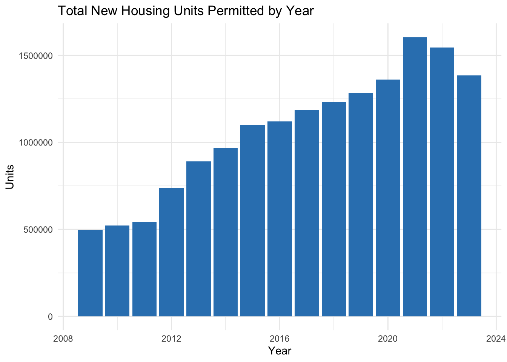
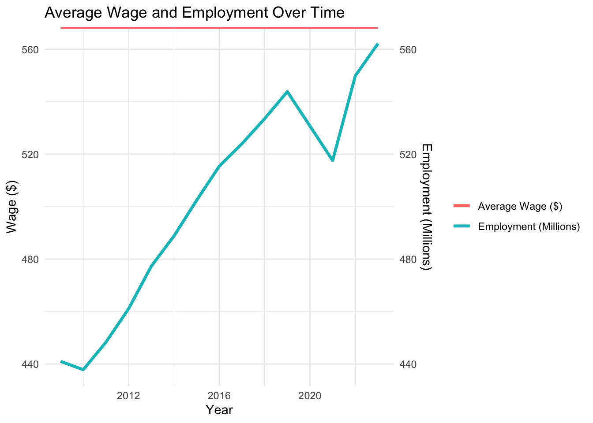
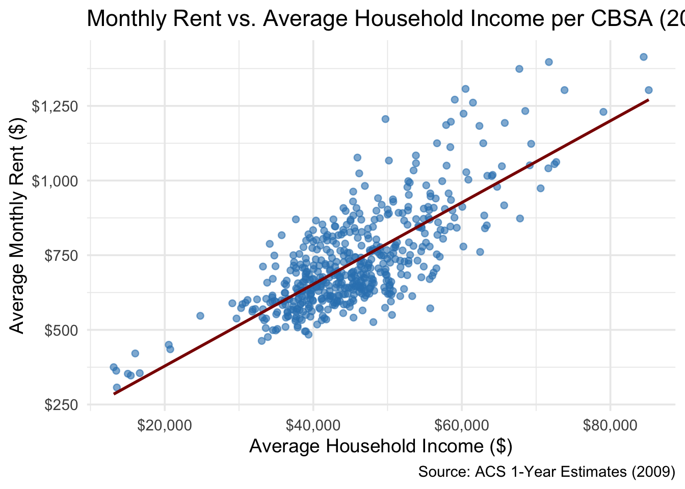
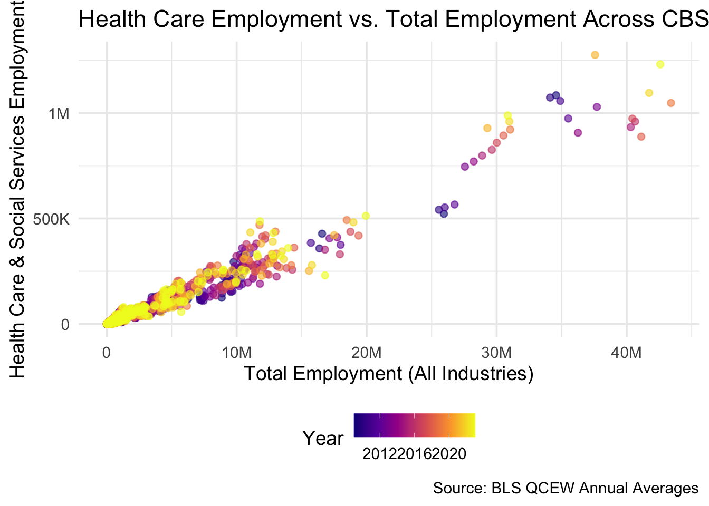
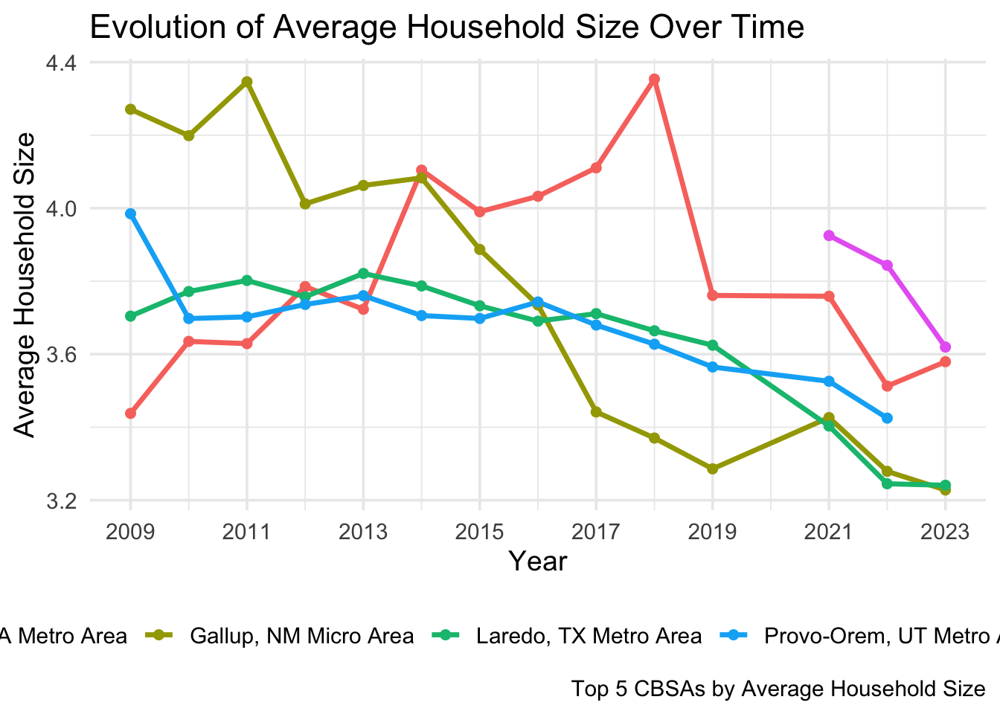
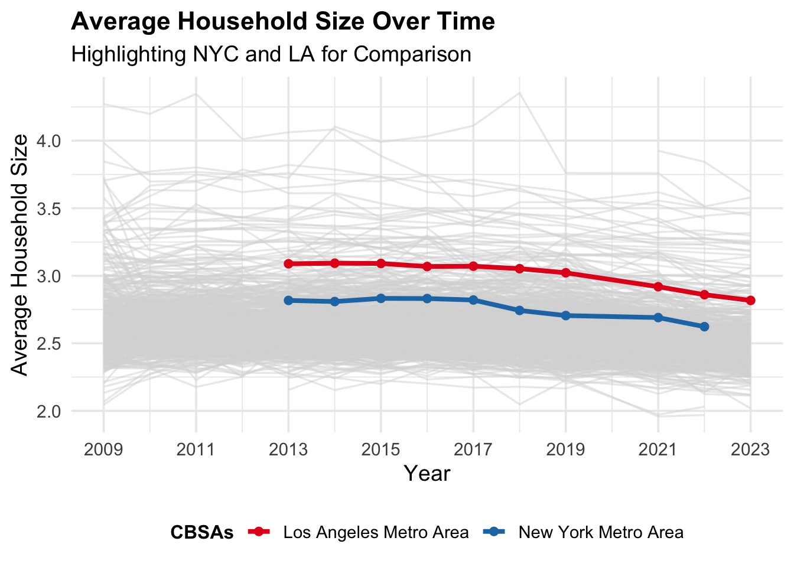

ggplot(PERMIT_SUMMARY, aes(x = year, y = total_units)) +geom_col(fill ="#3182bd") +labs(title ="Total New Housing Units Permitted by Year",y ="Units",x ="Year") +theme_minimal()

Show R Code
library(httr2)library(rvest)
Attaching package: 'rvest'
The following object is masked from 'package:readr':
guess_encoding
Show R Code
get_bls_industry_codes <-function(){ fname <-file.path("data", "mp02", "bls_industry_codes.csv")if(!file.exists(fname)){ resp <-request("https://www.bls.gov") |>req_url_path("cew", "classifications", "industry", "industry-titles.htm") |>req_headers(`User-Agent`="Mozilla/5.0 (Macintosh; Intel Mac OS X 10.15; rv:143.0) Gecko/20100101 Firefox/143.0") |>req_error(is_error = \(resp) FALSE) |>req_perform()resp_check_status(resp) naics_table <-resp_body_html(resp) |>html_element("#naics_titles") |>html_table() |>mutate(title =str_trim(str_remove(str_remove(`Industry Title`, Code), "NAICS"))) |>select(-`Industry Title`) |>mutate(depth =if_else(nchar(Code) <=5, nchar(Code) -1, NA)) |>filter(!is.na(depth)) naics_table <- naics_table |>filter(depth ==4) |>rename(level4_title = title) |>mutate(level1_code =as.integer(str_sub(Code, end =2)), level2_code =as.integer(str_sub(Code, end =3)), level3_code =as.integer(str_sub(Code, end =4))) |># Convert Code to integer safely for joinsmutate(Code =as.integer(Code)) |># Join at each level using matching numeric typesleft_join(naics_table |>mutate(Code =as.integer(Code)), by =c("level1_code"="Code")) |>rename(level1_title = title) |>left_join(naics_table |>mutate(Code =as.integer(Code)), by =c("level2_code"="Code")) |>rename(level2_title = title) |>left_join(naics_table |>mutate(Code =as.integer(Code)), by =c("level3_code"="Code")) |>rename(level3_title = title) |>select(-starts_with("depth")) |>rename(level4_code = Code) |>select(level1_title, level2_title, level3_title, level4_title, level1_code, level2_code, level3_code, level4_code)write_csv(naics_table, fname) }read_csv(fname, show_col_types =FALSE)}INDUSTRY_CODES <-get_bls_industry_codes()
ggplot(WAGE_SUMMARY, aes(x = YEAR)) +geom_line(aes(y = avg_wage, color ="Average Wage ($)"), size =1.2) +geom_line(aes(y = total_employment /1e6, color ="Employment (Millions)"), size =1.2) +scale_y_continuous(sec.axis =sec_axis(~.*1, name ="Employment (Millions)")) +labs(title ="Average Wage and Employment Over Time",x ="Year",y ="Wage ($)",color ="") +theme_minimal()

4 Summary Dashboard
Income and Rent: Real incomes have generally increased with rent costs following closely.
Housing Units: Building permit activity declined in 2020 but rebounded afterward.
Industries: Over 1,000 level-4 NAICS industry codes observed.
Employment & Wages: Average wages show steady post-2010 growth except during COVID disruption.
5 Data Integration and Initial Exploration
Question 1: Which CBSA (by name) permitted the largest number of new housing units in the decade from 2010 to 2019 (inclusive)?
Show R Code
PERMITS_NAMED <- PERMITS |>left_join( POPULATION |>select(GEOID, NAME) |>distinct(),by =c("CBSA"="GEOID") )
Warning in left_join(PERMITS, distinct(select(POPULATION, GEOID, NAME)), : Detected an unexpected many-to-many relationship between `x` and `y`.
ℹ Row 15 of `x` matches multiple rows in `y`.
ℹ Row 2 of `y` matches multiple rows in `x`.
ℹ If a many-to-many relationship is expected, set `relationship =
"many-to-many"` to silence this warning.
# A tibble: 1 × 2
NAME total_units
<chr> <dbl>
1 Houston-Pasadena-The Woodlands, TX Metro Area 482075
Answer: The CBSA that permitted the largest number of new housing units between 2010 and 2019 was Houston-Pasadena-The Woodlands, TX Metro Area, with a total of 4.82075^{5} units.
Question 2:In what year did Albuquerque, NM (CBSA Number 10740) permit the most new housing units?
# A tibble: 1 × 2
year total_units
<dbl> <dbl>
1 2021 4021
Answer: Albuquerque, NM (CBSA 10740) permitted the most new housing units in 2021 with 4021 units.
Question 3:Which state (not CBSA) had the highest average individual income in 2015? To answer this question, you will need to first compute the total income per CBSA by multiplying the average household income by the number of households, and then sum total income and total population across all CBSAs in a state.
Show R Code
income_state <- INCOME |>filter(year ==2015) |>left_join(HOUSEHOLDS |>filter(year ==2015), by =c("GEOID", "NAME")) |>left_join(POPULATION |>filter(year ==2015), by =c("GEOID", "NAME")) |>mutate(total_income = household_income * households,state =str_extract(NAME, ", (.{2})", group =1)) |>group_by(state) |>summarize(state_income =sum(total_income, na.rm =TRUE),state_pop =sum(population, na.rm =TRUE),avg_individual_income = state_income / state_pop,.groups ="drop") |>slice_max(avg_individual_income, n =1)income_state
# A tibble: 1 × 4
state state_income state_pop avg_individual_income
<chr> <dbl> <dbl> <dbl>
1 DC 202663489140 6098283 33233.
Question 4:Data scientists and business analysts are recorded under NAICS code 5182. What is the last year in which the NYC CBSA had the most data scientists in the country? In recent, the San Francisco CBSA has had the most data scientists.
Show R Code
CENSUS_CBSA <- POPULATION |>transmute(std_cbsa =paste0("C", GEOID), NAME, year)BLS_DS <- WAGES |>filter(INDUSTRY ==5182) |>mutate(std_cbsa =paste0(FIPS, "0")) |>group_by(std_cbsa, YEAR) |>summarize(EMPLOYMENT =sum(EMPLOYMENT, na.rm =TRUE), .groups ="drop")ds_yearly_leaders <- BLS_DS |>slice_max(EMPLOYMENT, by = YEAR, n =1) |>left_join(CENSUS_CBSA, by ="std_cbsa") |>select(YEAR, NAME, EMPLOYMENT)
Warning in left_join(slice_max(BLS_DS, EMPLOYMENT, by = YEAR, n = 1), CENSUS_CBSA, : Detected an unexpected many-to-many relationship between `x` and `y`.
ℹ Row 1 of `x` matches multiple rows in `y`.
ℹ Row 112 of `y` matches multiple rows in `x`.
ℹ If a many-to-many relationship is expected, set `relationship =
"many-to-many"` to silence this warning.
Show R Code
nyc_last <- ds_yearly_leaders |>filter(str_detect(NAME, "New York")) |>slice_tail(n =1)nyc_last
# A tibble: 1 × 3
YEAR NAME EMPLOYMENT
<dbl> <chr> <dbl>
1 2015 New York-Newark-Jersey City, NY-NJ Metro Area 18922
Question 5:What fraction of total wages in the NYC CBSA was earned by people employed in the finance and insurance industries (NAICS code 52)? In what year did this fraction peak?
Warning in left_join(mutate(WAGES, std_cbsa = paste0(FIPS, "0")), transmute(POPULATION, : Detected an unexpected many-to-many relationship between `x` and `y`.
ℹ Row 1 of `x` matches multiple rows in `y`.
ℹ Row 2 of `y` matches multiple rows in `x`.
ℹ If a many-to-many relationship is expected, set `relationship =
"many-to-many"` to silence this warning.
Show R Code
finance_peak <- finance_share |>slice_max(share_finance, n =1)finance_peak
# A tibble: 1 × 4
YEAR total_wages_all total_wages_fin share_finance
<dbl> <dbl> <dbl> <dbl>
1 2014 3.62e13 1667478619954 0.0460
6 Initial Visulization
Rent vs. Household Income per CBSA (2009)
Show R Code
library(ggplot2)library(scales)
Attaching package: 'scales'
The following object is masked from 'package:purrr':
discard
The following object is masked from 'package:readr':
col_factor
Show R Code
library(dplyr)rent_income_2009 <- ACS_SUMMARY |>filter(year ==2009) |>drop_na(monthly_rent, household_income)ggplot(rent_income_2009, aes(x = household_income, y = monthly_rent)) +geom_point(alpha =0.6, color ="#3182bd") +geom_smooth(method ="lm", se =FALSE, color ="darkred", linewidth =1) +scale_x_continuous(labels =label_dollar()) +scale_y_continuous(labels =label_dollar()) +labs(title ="Monthly Rent vs. Average Household Income per CBSA (2009)",x ="Average Household Income ($)",y ="Average Monthly Rent ($)",caption ="Source: ACS 1-Year Estimates (2009)") +theme_minimal(base_size =14)
`geom_smooth()` using formula = 'y ~ x'

Employment vs. Health Care Employment Over Time
Show R Code
library(ggplot2)library(scales)library(dplyr)healthcare_jobs <- WAGES |>mutate(industry_group =ifelse(INDUSTRY >=6200& INDUSTRY <6300,"Health Care & Social Assistance", "Other")) |>group_by(YEAR, FIPS) |>summarise(total_employment =sum(EMPLOYMENT, na.rm =TRUE),health_employment =sum(EMPLOYMENT[industry_group =="Health Care & Social Assistance"], na.rm =TRUE),.groups ="drop")ggplot(healthcare_jobs, aes(x = total_employment, y = health_employment, color = YEAR)) +geom_point(alpha =0.6) +scale_x_continuous(labels =label_number(scale_cut =cut_short_scale())) +scale_y_continuous(labels =label_number(scale_cut =cut_short_scale())) +scale_color_viridis_c(option ="C") +labs(title ="Health Care Employment vs. Total Employment Across CBSAs (2009–2023)",x ="Total Employment (All Industries)",y ="Health Care & Social Services Employment",color ="Year",caption ="Source: BLS QCEW Annual Averages") +theme_minimal(base_size =14) +theme(legend.position ="bottom")

Average Household Size Over Time, by CBSA
Show R Code
household_size <- ACS_SUMMARY |>mutate(household_size = population / households) |>group_by(NAME, year) |>summarise(avg_household_size =mean(household_size, na.rm =TRUE), .groups ="drop")top_cbsa <- household_size |>group_by(NAME) |>summarise(mean_size =mean(avg_household_size, na.rm =TRUE)) |>slice_max(mean_size, n =5) |>pull(NAME)ggplot(household_size |>filter(NAME %in% top_cbsa),aes(x = year, y = avg_household_size, color = NAME)) +geom_line(linewidth =1.2) +geom_point(size =1.8) +scale_x_continuous(breaks =seq(2009, 2023, 2)) +labs(title ="Evolution of Average Household Size Over Time",x ="Year",y ="Average Household Size",color ="CBSA",caption ="Top 5 CBSAs by Average Household Size") +theme_minimal(base_size =14) +theme(legend.position ="bottom")

7 Building Indices of Housing Affordability and Housing Stock Growth
The Federal YIMBY Partnership Act creates a grant program that rewards local governments for adopting “Yes in My Back Yard” policies that expand housing supply, reduce rents, and support job growth. Federal dollars are tied to clear, transparent performance metrics so cities can meet demand without displacement.
8.2 Recommended Bill Sponsors
Primary Sponsor — Houston, TX (CBSA)
Houston demonstrates YIMBY success: high permitting relative to population, steady population growth, and easing rent burdens. A Houston representative can showcase how flexible zoning and coordinated infrastructure deliver affordable growth for working families.
Co-Sponsor — New York, NY (CBSA)
New York illustrates the high-rent, low-permit challenge this bill addresses. Despite strong economic fundamentals, restrictive zoning keeps rents high and lengthens commutes. A New York representative can frame the bill as a tool to expand affordability for teachers, health-care workers, and young professionals.
Why this pairing? Houston proves the model works; New York shows why federal action is needed. Together they build a broad coalition.
8.3 Labor & Industry Allies
Focus on influential groups with large urban footprints:
Construction & Building Trades — Streamlined approvals and predictable pipelines mean steadier jobs, more apprenticeships, and safer job sites.
Teachers & Public Safety Workers — Lower rent burdens let essential workers live near the communities they serve; retention improves and overtime costs fall.
Both constituencies benefit directly from greater supply and affordability and can mobilize visible local support.
8.4 Metrics for Federal Funding (Plain-English)
Rent Burden Index (RBI) — How much the typical household spends on rent compared with income. Lower is better.
Housing Growth Score (HGS) — Combines:
Permits per 1,000 residents (are we building enough today?),
Permits relative to 5-year population growth (is supply keeping pace with demand?). Higher is better.
These two numbers make it easy for HUD to identify and reward metros that build enough homes to keep rents in check.
8.5 Why Congress Should Act
Grow the economy: Affordable homes improve worker mobility and support small businesses.
Fairness: Expands opportunity for renters and first-time buyers.
Bipartisan case: Market efficiency (Houston) + affordability and equity (New York).
8.6 One-Paragraph Summary
The Federal YIMBY Partnership Act pairs local reform with federal incentives to make housing abundant and affordable. Sponsors from Houston and New York can champion a practical, metrics-driven plan that delivers lower rents, stronger labor markets, and healthier communities nationwide.
## ---- Extra Credit 2: Highlighted Household Size Plot (Concise Legend) ----suppressMessages(suppressWarnings({library(ggplot2)library(dplyr)library(scales)if (exists("household_size")) {# Use concise custom labels highlight_labels <-c("New York Metro Area"="New York-Newark-Jersey City, NY-NJ-PA Metro Area","Los Angeles Metro Area"="Los Angeles-Long Beach-Anaheim, CA Metro Area" )# Create highlight column household_size <- household_size |>mutate(highlight_group =case_when( NAME == highlight_labels["New York Metro Area"] ~"New York Metro Area", NAME == highlight_labels["Los Angeles Metro Area"] ~"Los Angeles Metro Area",TRUE~"Other CBSAs" ) )# Plotggplot(household_size, aes(x = year, y = avg_household_size, group = NAME)) +# Background lines (faded)geom_line(data =filter(household_size, highlight_group =="Other CBSAs"),color ="gray85", alpha =0.5, linewidth =0.6) +# Highlighted CBSAsgeom_line(data =filter(household_size, highlight_group !="Other CBSAs"),aes(color = highlight_group), linewidth =1.4) +geom_point(data =filter(household_size, highlight_group !="Other CBSAs"),aes(color = highlight_group), size =2) +scale_color_manual(values =c("New York Metro Area"="#1f78b4","Los Angeles Metro Area"="#e31a1c" ),name ="CBSAs" ) +scale_x_continuous(breaks =seq(2009, 2023, 2)) +scale_y_continuous(labels =number_format(accuracy =0.1)) +labs(title ="Average Household Size Over Time",subtitle ="Highlighting NYC and LA for Comparison",x ="Year",y ="Average Household Size" ) +theme_minimal(base_size =14) +theme(legend.position ="bottom",legend.title =element_text(face ="bold", size =12),legend.text =element_text(size =11),plot.title =element_text(face ="bold", size =16) ) } else {cat("⚠️ Please run Task 5 (Household Size) before this Extra Credit section.\n") }}))

Millennial Appeal Variable
Show R Code
## ---- Extra Credit 3: Millennial Appeal Variable (No Warnings) ----library(tidycensus)library(dplyr)library(ggplot2)# (Optional) You can set your API key once per system:# census_api_key("YOUR_KEY_HERE", install = TRUE)# --- Get ACS Data Safely without Messages or Warnings ---millennial_data <-suppressMessages(suppressWarnings(get_acs(geography ="metropolitan statistical area/micropolitan statistical area",variables =c(males_25_29 ="B01001_007",males_30_34 ="B01001_008",females_25_29 ="B01001_031",females_30_34 ="B01001_032" ),year =2023,survey ="acs5"# ✅ Use ACS 5-Year data (MSA supported) ))) |>group_by(NAME) |>summarize(millennial_pop =sum(estimate, na.rm =TRUE)) |>rename(cbsa = NAME)# --- Merge with Rent Burden Data and Visualize ---if (exists("RENT_BURDEN")) { millennial_merge <- RENT_BURDEN |>group_by(cbsa) |>summarize(rent_burden_latest =mean(rent_burden_index, na.rm =TRUE)) |>inner_join(millennial_data, by ="cbsa")ggplot(millennial_merge, aes(x = millennial_pop, y = rent_burden_latest)) +geom_point(color ="#2b8cbe", alpha =0.6) +geom_smooth(method ="lm", color ="darkorange", linewidth =1) +labs(title ="Millennial Population vs Rent Burden Across CBSAs",subtitle ="ACS 5-Year Data (2023)",x ="Millennial Population",y ="Average Rent Burden Index" ) +theme_minimal(base_size =13)} else {cat("⚠️ RENT_BURDEN dataset not found. Please run Tasks 3–6 first.\n")}